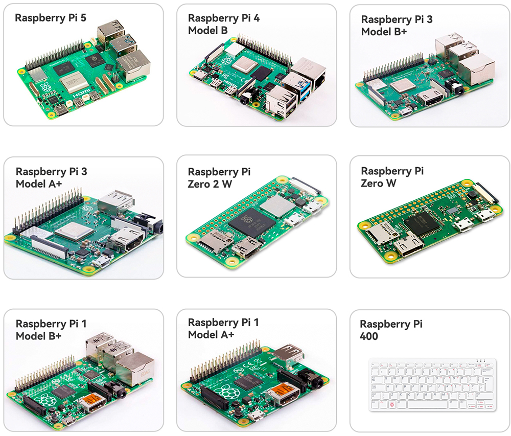

Nota
Ciao, benvenuto nella Community di appassionati di Raspberry Pi, Arduino e ESP32 di SunFounder su Facebook! Approfondisci il tuo viaggio con Raspberry Pi, Arduino ed ESP32 insieme ad altri appassionati.
Perché unirti a noi?
Supporto esperto: Risolvi i problemi post-vendita e le sfide tecniche con l’aiuto della nostra community e del nostro team.
Impara e Condividi: Scambia consigli e tutorial per migliorare le tue competenze.
Anteprime esclusive: Ottieni accesso anticipato a nuovi annunci di prodotti e anteprime.
Sconti speciali: Godi di sconti esclusivi sui nostri prodotti più recenti.
Promozioni e concorsi festivi: Partecipa a concorsi e promozioni durante le festività.
👉 Pronto a esplorare e creare con noi? Clicca su [Qui] e unisciti oggi stesso!
Cosa ci serve?
Componenti necessari
Raspberry Pi
Il Raspberry Pi è un computer a basso costo, delle dimensioni di una carta di credito, che si collega a un monitor o a una TV e utilizza una tastiera e un mouse standard. È un piccolo dispositivo versatile che consente a persone di tutte le età di esplorare l’informatica e di imparare a programmare in linguaggi come Scratch e Python.
Alimentatore
Il Raspberry Pi dispone di una porta micro USB (la stessa presente su molti telefoni cellulari) per collegarsi a una presa di corrente. Avrai bisogno di un alimentatore che fornisca almeno 2,5 ampere.
Scheda Micro SD
Il tuo Raspberry Pi ha bisogno di una scheda Micro SD per archiviare tutti i suoi file e il sistema operativo Raspberry Pi. Sarà necessaria una scheda micro SD con una capacità di almeno 8 GB.
Componenti opzionali
Schermo
Per visualizzare l’ambiente desktop del Raspberry Pi, devi utilizzare uno schermo, che può essere una TV o un monitor per computer. Se lo schermo dispone di altoparlanti integrati, il Pi riprodurrà i suoni attraverso di essi.
Mouse e Tastiera
Quando utilizzi uno schermo, sono necessari anche una tastiera USB e un mouse USB.
HDMI
Il Raspberry Pi ha una porta di uscita HDMI compatibile con le porte HDMI della maggior parte dei moderni televisori e monitor per computer. Se il tuo schermo ha solo porte DVI o VGA, dovrai utilizzare l’adattatore di conversione appropriato.
Case
Puoi posizionare il Raspberry Pi in un case; in questo modo, potrai proteggere il tuo dispositivo.